Wordpress Abandoned Cart
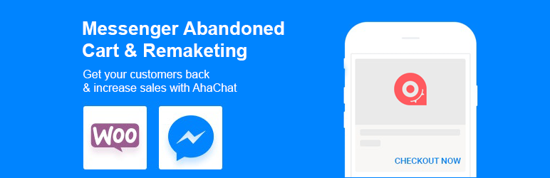
AhaChat đã phát triển một plugin cho Woocommerce của Wordpress với tên gọi là AhaChat Messenger Marketing để giúp chủ shop tăng doanh thu nhanh chóng, bằng cách:
ABANDONED CART
Khi khách truy cập của bạn thêm sản phẩm vào giỏ hàng, trang Facebook của bạn sẽ gửi cho khách hàng đó tối đa 3 tin nhắn nhắc nhở nếu họ không mua.
MÃ GIẢM GIÁ
Khuyến khích người mua hàng của bạn bằng cách tiết lộ mã giảm giá bên dưới nút Thêm vào giỏ. Chỉ với một cú nhấp chuột, khách nhận được lời đề nghị. Và cửa hàng của bạn bây giờ có quyền nhắn tin cho khách nếu họ không mua.
GỬI BROADCAST
Thu hút khách hàng tiềm năng 1:1 thông qua FB Messenger. Tin nhắn Messenger có tỷ lệ mở siêu cao và tỷ lệ nhấp để khách truy cập của bạn có thể hoàn tất giao dịch mua hàng của họ.
Demo: https://woo.ahachat.com/product/ahachat/
Plugin: https://wordpress.org/plugins/ahachat-messenger-marketing/
1. Cài đặt Cron Job
Wordpress có một thứ gọi là wp-cron, nó tồn tại để xử lý các tác vụ ngầm mà bạn không nhìn thấy, ví dụ như đăng bài định kỳ, gửi email hàng tuần, gửi tin nhắn messenger hàng ngày. Tuy nhiên tác vụ này lại khiến hệ thống chạy chậm (đặc biệt là khi tích hợp với bot vì tin nhắn được gửi đi thường xuyên). Do vậy trong bài viết này mình sẽ hướng dẫn bạn cài đặt nó đúng cách để giúp website tích hợp bot chạy mượt hơn mà không ảnh hưởng đến các tác vụ khác.
1.1 Disabled wp-cron mặc định
Chúng ta sẽ vô hiệu hóa wp-cron mặc định của Wordpress bằng cách thêm dòng sau vào tệp wp-config.php:
define('DISABLE_WP_CRON', true);
1.2 Cài đặt lại cronjob mới
Ở đây chúng ta sẽ tùy chỉnh cronjob chạy 30 phút một lần.
Nếu bạn dùng hosting có Cpanel:
Login vào cPanel và chọn mục Cron jobs trong phần Advanced.
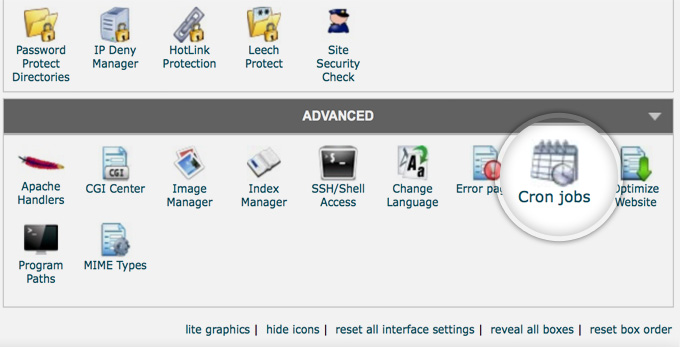
Sau đó, thêm dòng code dưới đây để chạy cronjob mỗi 30 phút:
Chú ý bạn cần thay thế website với tên miền example.com thành tên miền bạn sử dụng (ví dụ của mình là woo.ahachat.com). Cron jobs có nhiều lựa chọn được cài đặt sẵn, nên bản chỉ cần chọn Every 30 minutes mục Minute and thêm một dấu "*" ở các mục còn lại.
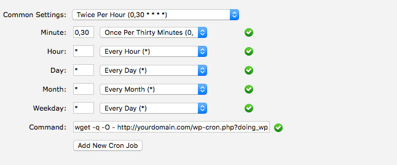
Nếu bạn dùng VPS (sử dụng hệ điều hành Linux)
Từ Linux terminal, dùng dòng lệnh sau để mở crontab:
Sau đó thêm một dòng code như dưới đây.
Chú ý phải đảm bảo đúng đường dẫn đến file wp-cron.php.
Như vậy là xong phần cài đặt cronjob cho website Wordpress của bạn.
2. Cài đặt plugin AhaChat
Cách 1: Vào menu Plugins của Wordpress, chọn Add New sau đó tìm từ khóa là ahachat.
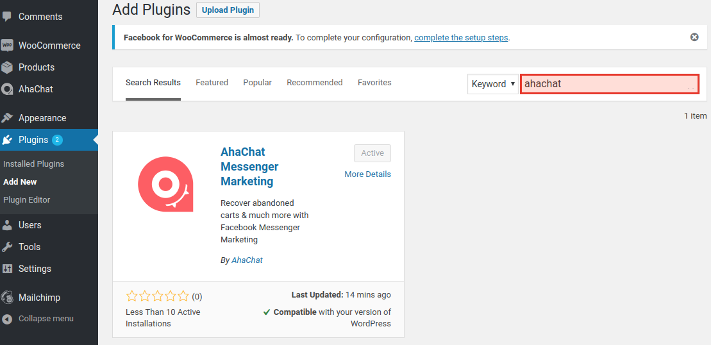
Cách 2: Vào thằng trang plugin để download https://wordpress.org/plugins/ahachat-messenger-marketing
Sau khi Install Now thì Active plugin đó để nó hoạt động với giao diện có hình logo AhaChat.
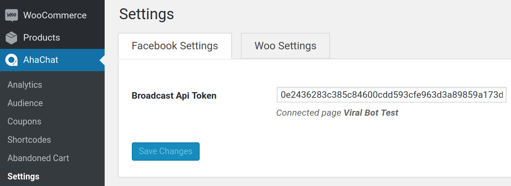
3. Sử dụng plugin AhaChat
AhaChat đưa các chức năng dưới dạng một danh sách menu dễ quản lý như sau:
3.1 Analytics
Thống kê số lượng đơn hàng, doanh thu được cứ từ bot và số lượng tin nhắn được gửi đi từ bot.
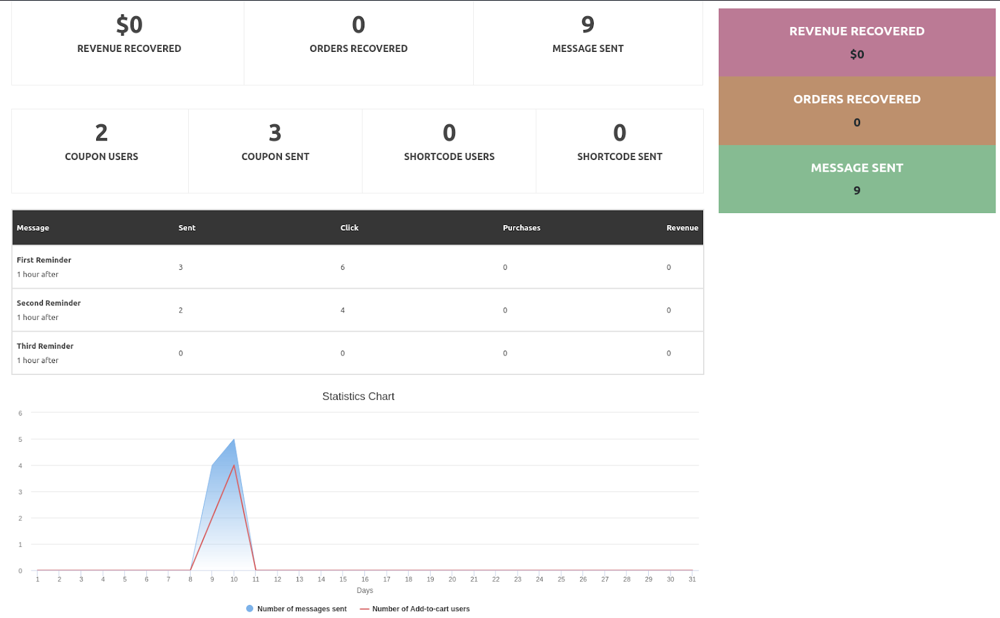
3.2 Audience
Hiển thị danh sách những khách hàng đã Thêm vào giỏ. Tại đây bạn có thể Gửi Broadcast để nhắc nhở họ thanh toán hoặc gửi mã khuyến mãi.
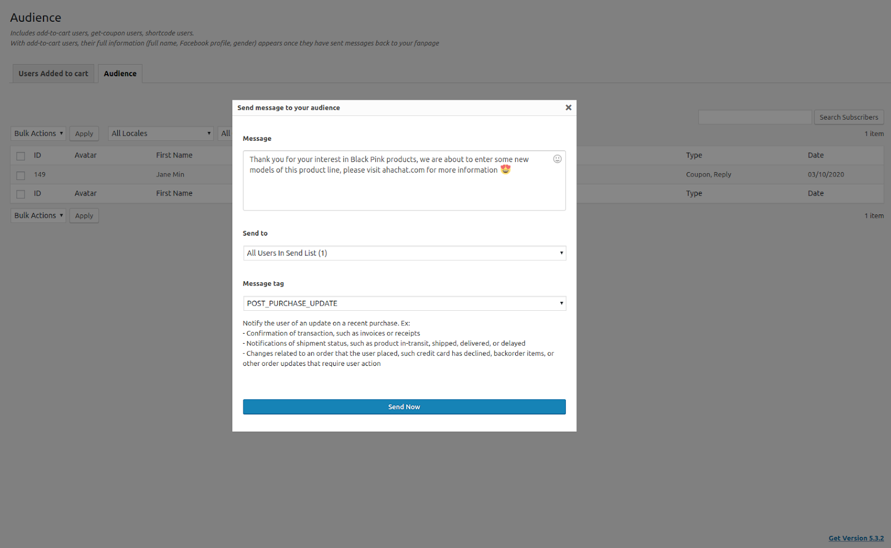
Tại đây có 2 mục:
- Users Added to Cart để hiển thị danh sách những khách hàng đã thêm sản phẩm Thêm vào giỏ. Giai đoạn này bạn vẫn sẽ chưa biết được khách hàng của mình là ai, chỉ biết họ đã thêm vào giỏ bao nhiêu sản phẩm mà thôi.
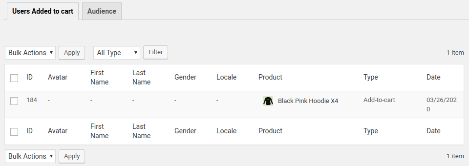
- Audience để hiển thị danh sách những khách hàng đã nhận tin nhắn từ bot và trả lời lại. Chú ý là sau khi trả lời lại thì khách hàng đó trên mục Users Added to Cart sẽ bị xóa. Những khách hàng trả lời lại bot có nghĩa đã là Subscriber và bạn có thể gửi Broadcast đến đối tượng này.
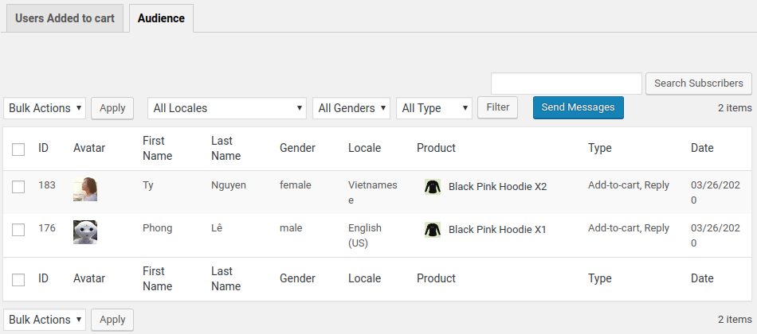
3.3 Coupons
Nếu bật sẽ hiển thị 1 nút bấm màu xanh để khi khách hàng nhấp vào thì sẽ nhận được Coupon. Giao diện coupon có thể chọn màu, nội dung để thu hút khách hàng bấm vào.
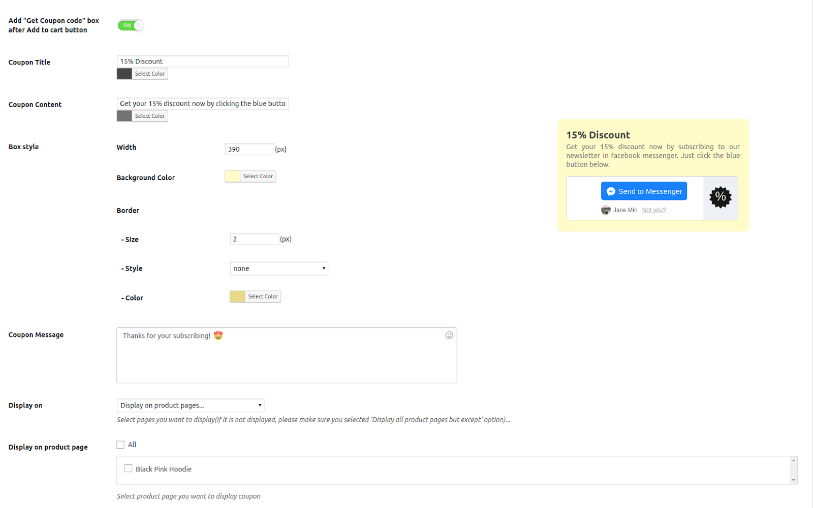
3.4 Shortcodes
Tương tự như Coupons nhưng có thể nhúng vào nội dung các bài viết.
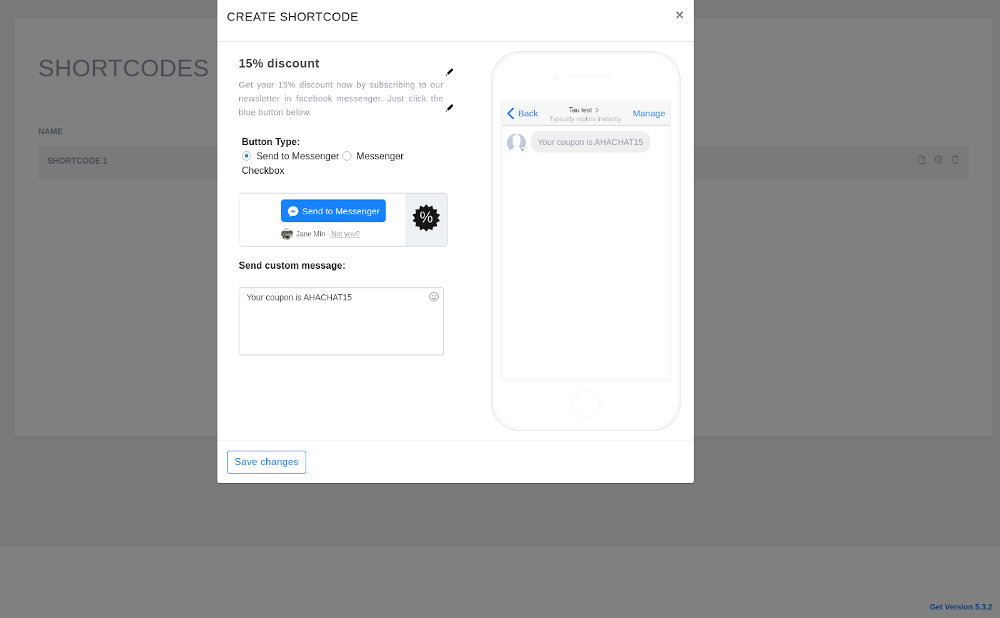
3.5 Abandoned Cart
Đúng như tên gọi của nó, giúp bạn gửi 3 tin nhắn nhắc nhở khách hàng thanh toán những đơn hàng đang bị bỏ rơi. Bạn nên set thời gian tin nhắn cách nhau lần lượt là 1h, 6h, 20h để tránh làm phiền khách hàng.
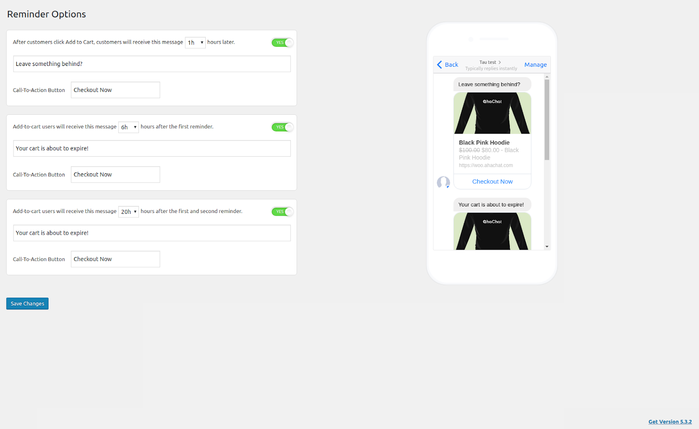
3.6 Settings
Đây là phần quan trọng nhất, giúp bạn tích hợp chatbot của AhaChat vào Wordpress, gồm 2 phần:
Phần 1: Facebook Settings
Nhập Broadcast API Token từ AhaChat vào ô trên
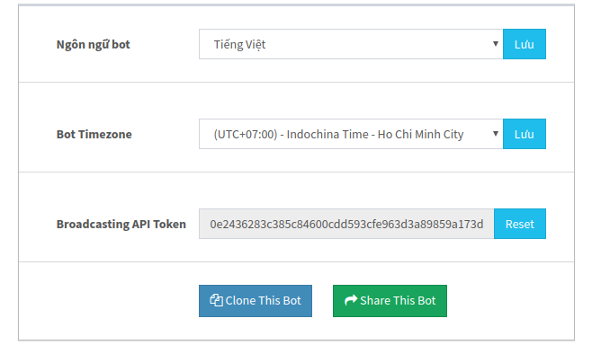
Phần 2: Woo Settings
Cài đặt hiển thị checkbox Send to Messenger dưới nút Thêm vào giỏ hay không bằng cách bật tắt Checkbox under Add to cart button. Đặc biệt, nếu bạn muốn test có tin nhắn gửi về khi tích vào checkbox hay không thì phải bật (chuyển qua màu xanh) Test Mode lên (sau khi test xong nhớ tắt lại).
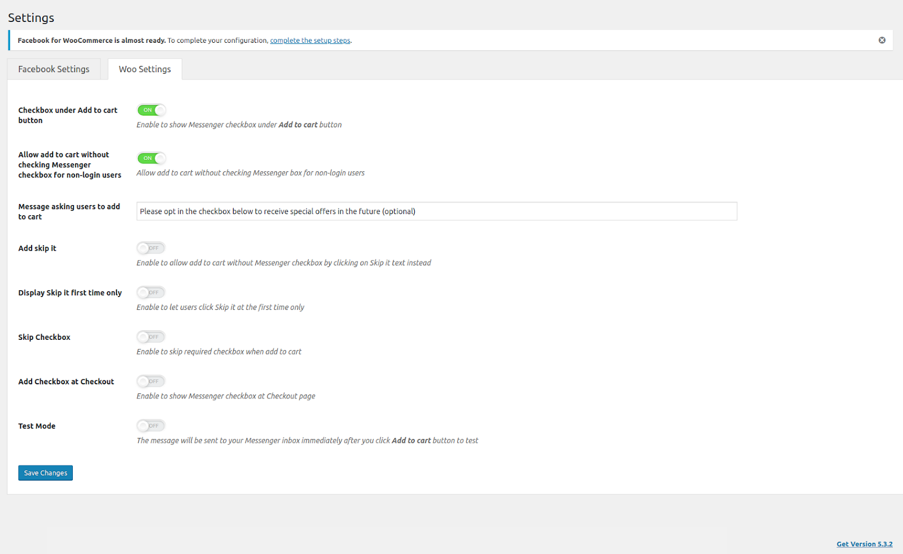
(Trường hợp bật Checkbox under Add to cart button và tắt Add "Get Coupon code" box after Add to cart button)
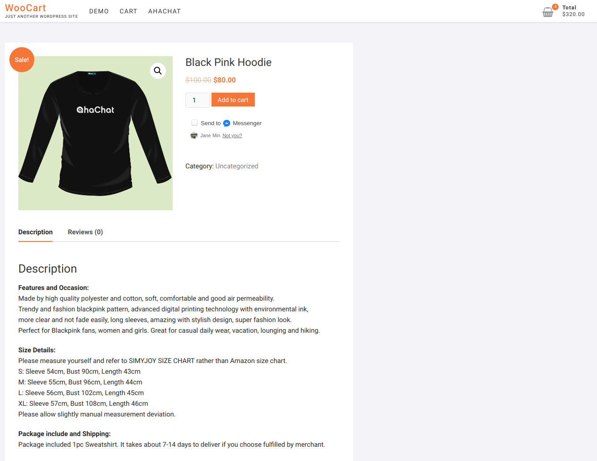
(Trường hợp tắt Checkbox under Add to cart button và bật Add "Get Coupon code" box after Add to cart button)
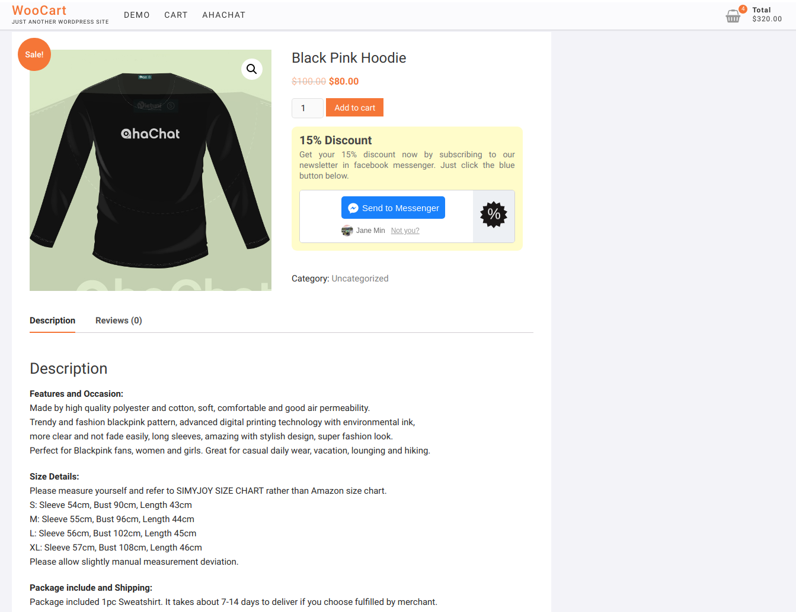
Tất cả đã xong, bây giờ bạn chỉ cần ngồi chờ thành quả doanh thu tăng lên rõ rệt nhờ những đơn hàng được cứu bởi AhaChat, chúc may mắn và đừng quên review ⭐⭐⭐⭐⭐ cho plugin của tụi mình nhé ;)
Bạn có bất kỳ câu hỏi nào liên quan đến cách tích hợp Chatbot AhaChat vào Woocommerce của Wordpress? Bạn muốn khởi chạy chiến dịch tiếp cận khách hàng của mình bằng Chatbot với một số lời khuyên chuyên môn từ Đối tác tiếp thị của Facebook? Đừng ngần ngại liên hệ với chúng tôi để có câu trả lời nhanh nhất và hiệu quả nhất! Tận hưởng công cụ chatbot miễn phí của chúng tôi mà không cần phải trả bất kỳ chi phí nào!